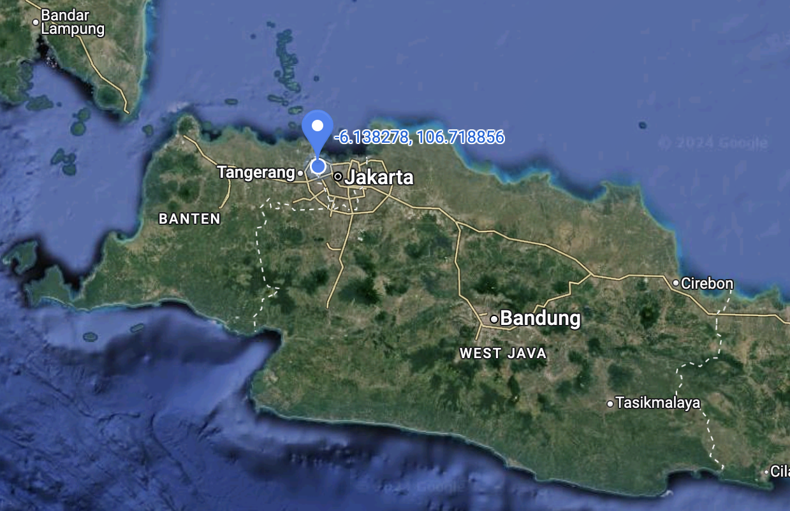

Cuaca Saat Ini
Jakarta Barat
Jakarta 31°
Kemungkinan Hujan: 12%
Gempa Bumi Terkini
16 November 2024, 22:28:37 WIB
Magnitudo: 4.9 | Kedalaman: 26 KM
Lokasi: Jakarta Barat
Cermat memberi tahu, Akurat untuk keselamatan.
Peringatan Dini 14 November 2024 | Jakarta: Waspada Cuaca Ekstrem hingga 31°
Kemungkinan Hujan: 12%
16 November 2024, 22:28:37 WIB
Magnitudo: 4.9 | Kedalaman: 26 KM
Lokasi: Jakarta Barat